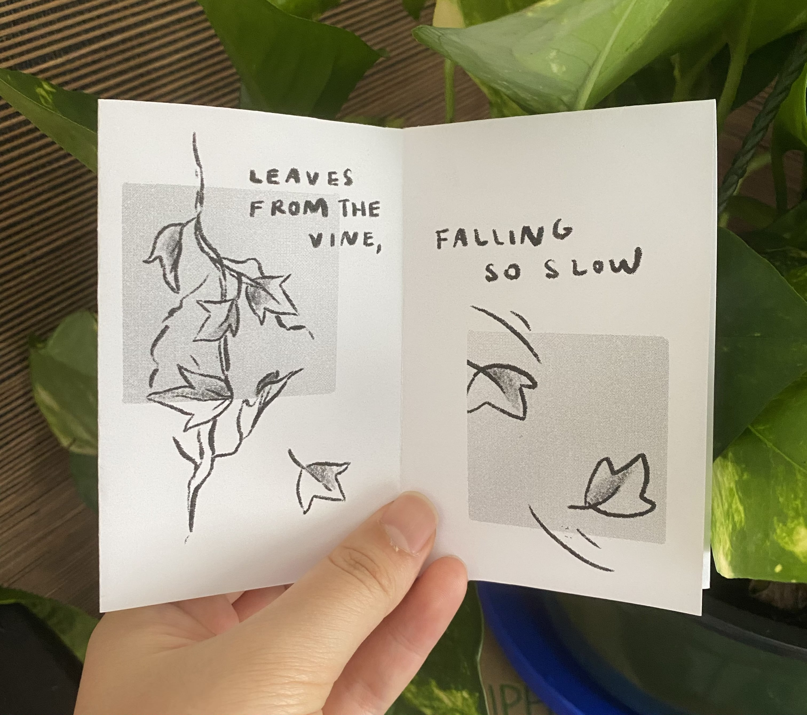

It’s been a month since the start of school and things have ramped up significantly since the first week. I feel like every week is the busiest one yet, but overall I love everything that’s been keeping me busy.
In terms of classes, not much exciting has happened. Psets are still hard, but I’m gradually getting used to them and having them take over less of my life. I took my first midterms last week and I’m proud to say that I did well on them! Studying at home often gets lonely, so I’ve been hitting up a couple of friends for study calls. Most of the time we’re not working on the same thing, but I do feel slightly less alone being in some sort of human presence even if it’s through Zoom. My media studies prof mentioned how each form of media has its affordances — what interactions the media can/cannot enable. He noted that Zoom is limited by the fact that you can’t really make eye contact with anyone. Human interaction through a computer screen just isn’t the same.
This is going off topic, but my prof’s discussion of media affordances reminded me of zines I made over the summer. They have the affordances of being physically shareable even in a socially distanced world: I emailed my friends digital printables of my zine, which they printed out and folded into physical minibooks.

I’m happy to say that 6.006 (intro algorithms) is becoming less of a mystery, although still by far my most challenging and time consuming class. That’s probably the case for many since despite hopping into the office hour queue 2 minutes after it opened, I was 15th in line and had to wait an hour. While I was waiting, I wrote a script to analyze facebook messenger reactions in my chats. I just love random data like this. I found out that I tend to use sad reaccs at a frequency 2-3x higher than my friends, despite generally considering myself a positive person.
I absolutely LOVE my UROP (undergrad research)! It’s awesome how I get to apply stuff I learned about GANs (generative adversarial networks) from a high school project while also learning so many new things. It also helps that I have an incredibly passionate mentor who seems excited to give me guidance. Since my research is in the realm of computer vision, the artist in me is enjoying all the generated pictures from my GAN experiments. Research is easily the most fulfilling thing I’m doing right now; I often find myself pushing off coursework to fine tune my experiments and the likes.
Not sure if this is a good idea in terms of keeping a ~balanced~ workload, but I committed to three clubs: THINK committee in Techx, Bhangra, and Harvard Chinatown Citizenship, and interviewed for a fourth: Borderline. I have zero dance experience (save for flailing in my bedroom at 2am), but auditioned for Bhangra because of how hype it seemed. It’s definitely very high energy and a great workout! It’s admittedly intimidating to practice alongside experienced dancers while I’m having trouble just staying on beat, but we all start from somewhere. It’s also nice to have something fun that doesn’t require mental exertion in my regular schedule. I just taught my first class for Chinatown Citizenship (we teach Chinese immigrants in the Boston area English for passing the citizenship test) and the students, who were mostly senior citizens, were too wholesome! They called me “lao shi” (Chinese for “teacher”), which was too cute.
THINK is a high school research mentorship program that I had the privilege of taking part of as a high school junior, and now I’m on the committee that runs the program! So many things have come full circle for me: I get to work alongside people I met two years ago and one of the researchers I talked to during my THINK trip is now my UROP mentor. I also got to write a guest blog post detailing my experiences with THINK to be posted on the MIT admissions blog! I remember reading the admissions blog religiously as a high school student so it’s so cool how I’m about to contribute to it. It's a bit scary putting myself out there on the internet, especially with how big of an audience the admissions blogs have, but that’s good for getting the word out there about the THINK program.
Speaking of writing a legit blog post, I have a love hate relationship with writing and am definitely more of a visual artist. For the most part, I’ve seen writing more as a chore than anything. My memories of writing college app essays mostly consisted of feeling like my soul was getting sucked out trying to distill my personality, experiences, and perspectives in polished 250-word packages. But there were also those rare but very fulfilling moments when I unexpectedly wrote something beautiful and learned something new about myself. I created this space on my personal website to get more of those fleeting fulfilling moments. It’s also a low pressure way to get my thoughts out of my head and onto something more tangible.